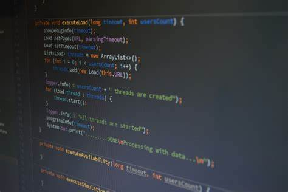
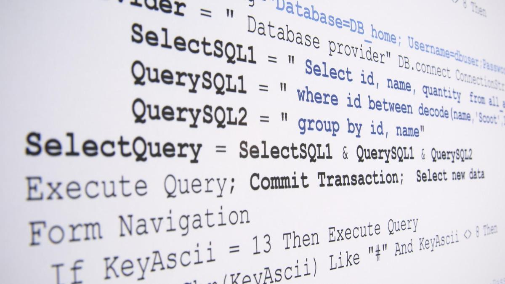
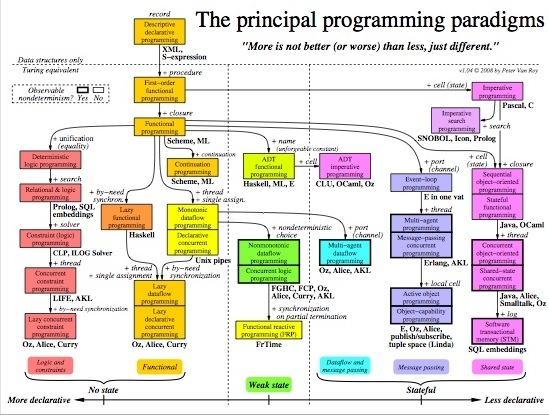
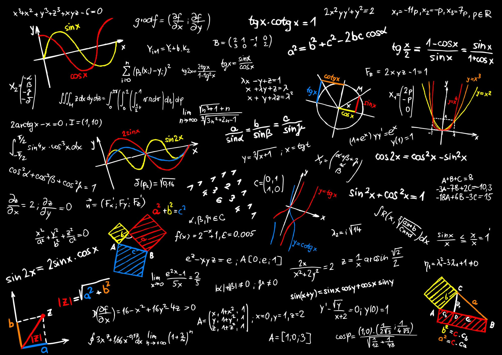
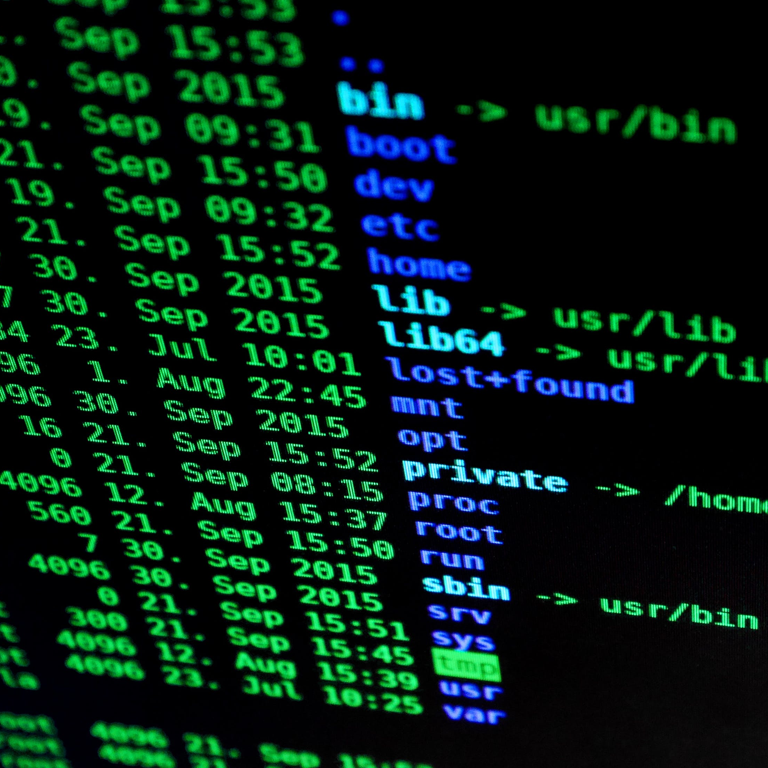
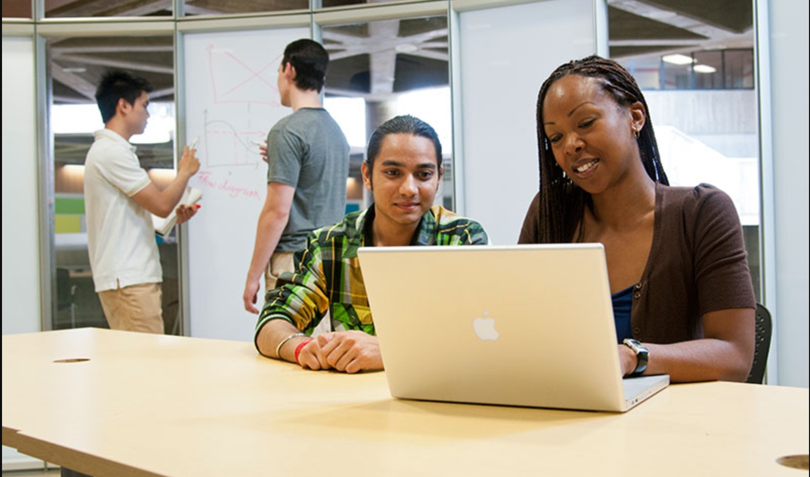

Courses
-

Introduction to Computer Programming
Level: Beginner
Course Code: CST8116
Possessing the fundamentals of logic, problem-solving and programming language structure provides a solid foundation for further study in the field. Students develop introductory knowledge of computer programming with emphasis on problem analysis and design, using algorithms, pseudocode, flowcharts, UML Class Diagrams and testing, with the Java programming language used as a means to implement problem solution designs. Through an introduction to the Java programming language students use sequential structures, selection structures, repetition structures, variables, constants, methods, constructors, one-dimensional arrays, object-oriented programming, classes, objects, abstraction, encapsulation, inputs, outputs, coding conventions and documentation. Theory is reinforced with application by means of practical laboratory assessments.
-
Computer Essentials
Level: Beginner
Course Code: CST8118
Maintaining a computer, using operating system and productivity software, and expressing related environmental and sustainability concerns, is an important part of working with Information Technology. Students explain computer hardware, and use operating system software to maintain, utilize, and secure a computer. Students practice the use of spreadsheet software to solve problems, use formulas, and visualize data with charts. Students discuss computer hardware and software with regards to financial and environmental sustainability. Theory is reinforced with application by means of practical laboratory assessments, including using virtualization software to install guest operating systems onto a host computer.
-

Introduction to Database
Level: Beginner
Course Code: CST8215
Databases are used to store data and are a core component of many information technology systems. Students learn the fundamentals of relational databases design using Entity Relation Diagrams (ERDs), and use Structured Query Language (SQL) to create, modify and query a database. Students design and create databases that are maintainable, secure and adaptable to change in business requirements, using normalization. Students become familiar with the functions of a Database Management System (DBMS) and its components in comparison with legacy systems and alternative information storage mechanisms.
-

Achieving Success in Changing Environments
Level: Beginner
Course Code: CST8300
Rapid changes in technology have created personal and employment choices that challenge each of us to find our place as contributing citizens in the emerging society. Life in the 21st century presents significant opportunities, but it also creates potential hazards and ethical problems that demand responsible solutions. Students explore the possibilities ahead, assess their own aptitudes and strengths, and apply critical thinking and decision-making tools to help resolve some of the important issues in our complex society with its competing interests.
-
Communications 1
Level: Beginner
Course Code: ENL1813T
Communication remains an essential skill sought by employers, regardless of discipline or field of study. Using a practical, vocation-oriented approach, students focus on meeting the requirements of effective communication. Through a combination of lectures, exercises, and independent learning, students practise writing, speaking, reading, listening, locating and documenting information and using technology to communicate professionally. Students develop and strengthen communication skills that contribute to success in both educational and workplace environments.
-

Technical Mathematics for Computer Science
Level: Beginner
Course Code: MAT8001C
The study of algebraic and transcendental functions is an essential prerequisite to Calculus. Students manipulate algebraic expressions, solve algebraic equations and linear systems and learn the properties of and graph algebraic and transcendental functions. Students investigate computer number systems in addition to Boolean algebra and logic to help solve problems involving computer systems. Students also study the addition and subtraction of vectors using vector components. Delivered in a modular format, this course is equivalent to the completion of all of the following math modules MAT8100 - A, B, C, D, E, F, and L.
-
Database Systems
Level: Intermediate
Course Code: CST2355
Database systems can automate data processing tasks as well as tie into the security of information technology systems. Students acquire practical experience using market-leading object-relational database management systems like Oracle and MySQL. Students obtain hands-on experience with advanced engineering modeling tools along with SQL, SQL scripts and programming with Oracle's PL/SQL blocks. Database concepts covered include advanced SQL, case structures, rollup and cube operations, metadata manipulation, data storage and retrieval, security and transaction control and data warehousing
Prerequisites: CST8215
-

Operating System Fundamentals (GNU/Linux)
Level: Beginner
Course Code: CST8102
Operating systems form the backbone of information technology systems coordinating the interaction between hardware and software. Students explore the basic concepts and components of Operating Systems (OS), and how they function and interact with hardware and software components. Students examine the details of operating system structures, process management, storage management, installation, configuration, and administration both in theory and through practical assignments based on the GNU/Linux operating system. Lab work is designed to implement the theory by developing skills using the powerful GNU/Linux command-line tools and utilities.
Prerequisites: CST8116 and CST8118
-
Object Oriented Programming (Java)
Level: Intermediate
Course Code: CST8284
Working in the field of information technology as a programmer requires a firm understanding of Object-Oriented Programming (OOP) concepts. Students explore object-oriented programming methodology using the Java programming language. Object oriented concepts, such as encapsulation, inheritance, abstraction and polymorphism are covered and reinforced with practical applications. Students explore the basics of data structures and algorithms as well as basic Graphical User Interface (GUI) programming.
Prerequisites: CST8116
-
Web Programming
Level: Intermediate
Course Code: CST8285
The World Wide Web (WWW) has become an integrated part of everyday life. Students develop basic skills of web programming, website design and implementation. JavaScript, HTML5, and PHP are used to explore web-based solutions to problems of increasing interactivity and complexity. Lectures are reinforced by practical assignments that encourage students to construct and maintain their own websites.
Prerequisites: CST8116
-
Technical Communication for Engineering Technologies
Level: Intermediate
Course Code: ENL2019T
The ability to communicate effectively in a technically-oriented interdisciplinary workplace is a foundational skill in an innovation-driven economy. Students are exposed to exercises and assignments designed to foster independent and collaborative critical thinking, research, writing, visual communication and presentation skills related to technical topics.
Prerequisites: ENL1813T
-

Cooperative Education and Job Readiness
Level: Intermediate
Course Code: GEP1001
Students are guided through a series of activities that prepare them to conduct a professional job search and succeed in the workplace. Through a detailed orientation students learn the cooperative education program policies and procedures related to searching and securing a work term opportunity. Students identify their strengths and transferable skills and participate in workshop-style sessions that focus on cover letter and resume development, interview techniques and job search strategies. Students learn how to navigate a web-based resource centre, which is used to post employment and cooperative education job opportunities. Students reflect on workplace success, ethics and responsibilities.
Prerequisites: ENL1813T
-
Science Fiction
Level: Intermediate
Course Code: GEN1957
Science fiction is both a genre of popular entertainment and a mode of social commentary. Students explore the formal conventions and the history of the genre, consume and analyze a representative range of science fiction, and strive to heighten their critical appreciation of the role and place of science fiction in society. Students also have an opportunity to create their own piece of science fiction.
-
Business Programming
Level: Advanced
Course Code: CST8283
Information systems built using the COBOL programming language support important institutions such as government services and the banking sectors. Students create COBOL programs in a business environment using structured methodology in the latest visual programming environment. Topics include output design, logic design tools, structured, top-down and modular coding, testing and debugging, and documentation. Students examine interactive, file-based, and database processing of data related to business problems. Arrays, indexed files, database access and sub-programs are explored.
Prerequisites: CST8116